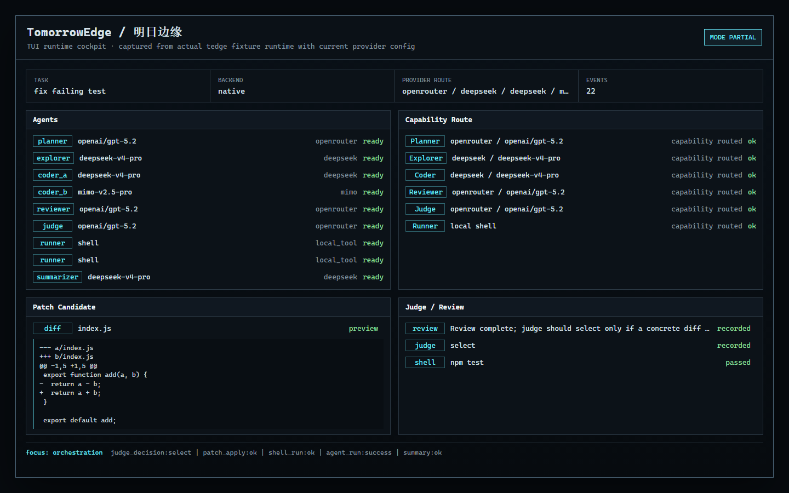
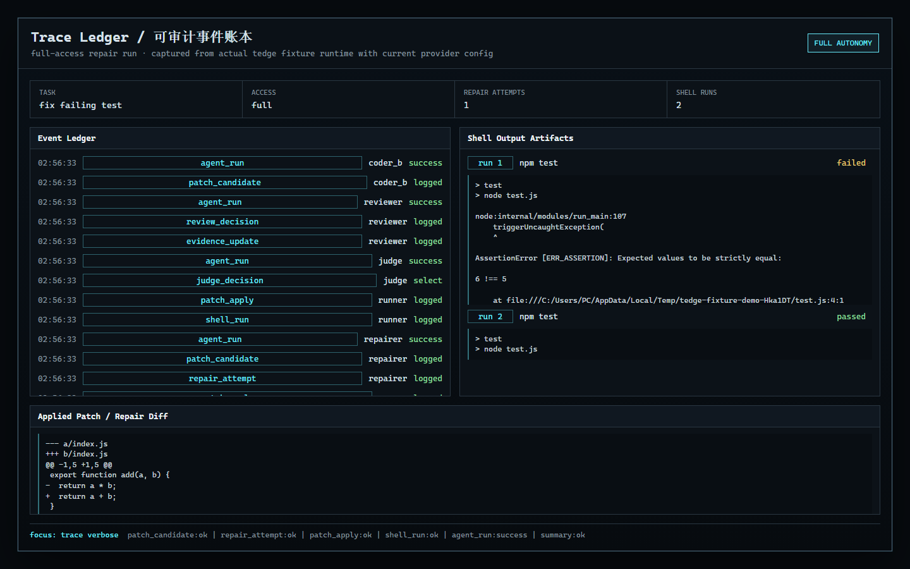
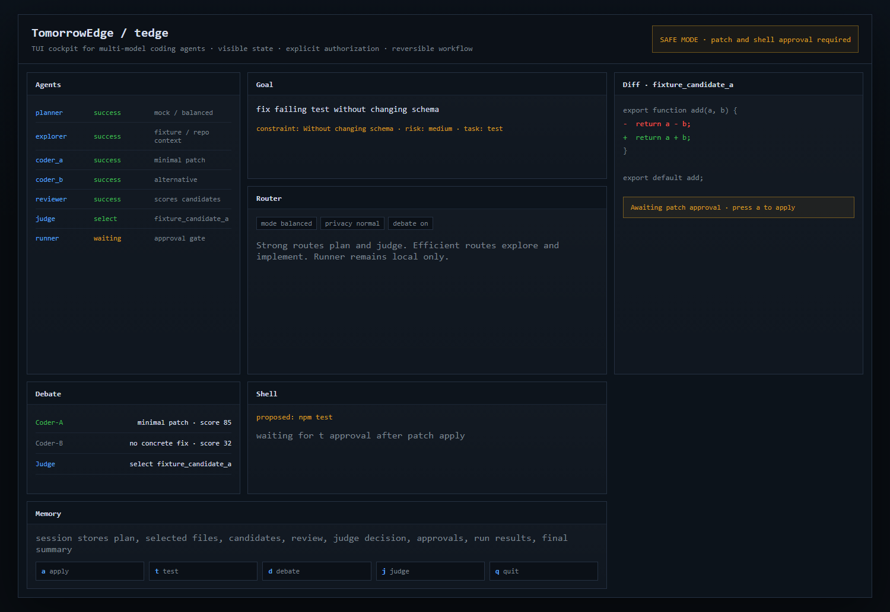

External-agent orchestration
Make Codex, Claude Code, local tools, and model providers act as roles instead of isolated command-line agents.
External-agent control layer
TomorrowEdge does not replace Codex or Claude Code. It connects them through MCP-style adapters and turns full-access agents into schedulable, observable, policy-governed roles inside one cockpit.
> goal: legacy C++ rewrite
> mode: governed full-access
> orchestrator: codex via mcp
> worker: claude-code role
[codex] decomposing migration plan...
[router] assigning cheap repair lane...
[claude-code] patch proposal received...
[policy] shell gate accepted...
[runner] cargo test --workspace
[ledger] trace checkpoint written
> external agent governed
Make Codex, Claude Code, local tools, and model providers act as roles instead of isolated command-line agents.
See agents, routes, patches, tests, shell runs, fallbacks, and review decisions as live operating state.
Keep full-access execution fast while permission modes, MCP boundaries, undo snapshots, and event ledgers keep control intact.
Real cockpit runtime
TomorrowEdge is not only an architecture diagram. The TUI shows the live run: agent roles, provider routes, patch candidates, review decisions, shell output, and the trace ledger that explains what happened.


Why it exists
Sending the whole job to one premium full-access agent is expensive and hard to audit. Sending it to a cheap single model is brittle. TomorrowEdge lets a strong agent plan and judge while cheaper or specialized roles execute, repair, and verify under a visible policy layer.
Why TomorrowEdge
TomorrowEdge separates judgment from execution. Strong models handle high-value decisions, external coding agents become governed roles, efficient models carry routine work, local models protect sensitive context, and the cockpit records the whole run.
Positioning
High capability and deep tool access, but execution can become hard to route, budget, or audit once the run is moving.
Strong autonomyLow cost per call, but weak routing, brittle review, and limited trace semantics in real engineering tasks.
Simple economicsCodex, Claude Code, providers, and tools become role-routed nodes with policy gates, event replay, and visible cost accounting.
Autonomy with a cockpitExternal agents via MCP
Budget, access mode, provider policy, and repo context are loaded first.
MCP-style adapters expose external agents without handing them the whole product contract.
Planning, coding, review, shell, and repair can be split across agents, models, and local tools.
Every patch, command, fallback, approval, and judge decision lands in the event ledger.
How it works
Architecture
The cockpit owns access modes, routing, authorization, replay, and traceability. Native execution is available now; LangGraph, CrewAI, AutoGen, and MCP adapters can stream their steps back as TomorrowEdge events.
Open architectureProduct surface
TomorrowEdge starts as a TUI cockpit: dense, programmer-friendly, state-first, and restrained. The website carries that same industrial control language into the public product surface.

Open project
Try without API key
Run the offline fixture path first: patch, verification, trace, and TUI all work before any cloud provider is configured.
git clone https://github.com/axobase001/tomorrowedge
cd tomorrowedge
npm ci
npm run verify
npm run dev -- run "fix failing test" --headless --fixture-mode --approve-patch --approve-shell
npm run dev -- trace latest --verbose
npm run dev -- tui